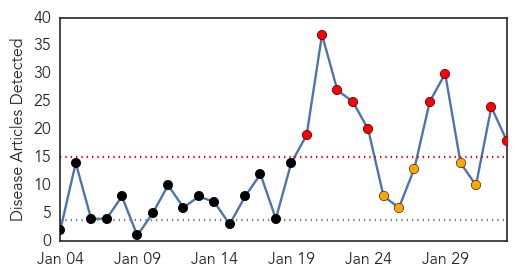
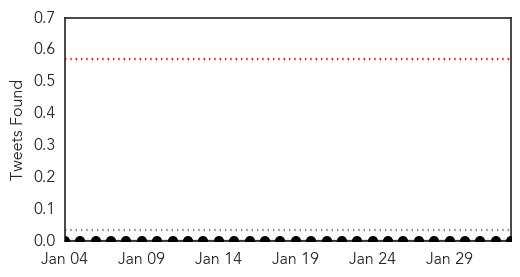

30 Day Trends
Web: 9 alerts, 5 warnings
Twitter: 0 alerts, 0 warnings
Top Articles:
- 1.000
- Gujarat Records Another Swine Flu Death, 39 Fresh Cases in a Single Day; First H1N1 Death in Odisha
- 0.999
- After ex-CM, Rajasthan's home minister hit by swine flu
- 0.999
- 191 swine flu deaths took place in India in January 2015: Govt
- 0.999
- No let up in swine flu surge in Telangana
- 0.998
- 1 more suspected swine flu death reported, 3 admitted on Sunday
- 0.996
- Breathalyser Tests Despite Flu Scare
- 0.996
- Rajasthan home minister, AP MP down with swine flu
- 0.993
- Five more test positive for swine flu
- 0.991
- 10 More Die of Swine Flu in Rajasthan
- 0.991
- Mohali records first swine flu death
- 0.972
- Med Teams land in Sampatti After 20 Fall Ill in Single Day
- 0.949
- Telangana: Swine Flu Claims 31 Lives in a Month
- 0.943
- Swine flu death toll hits 42 in Gujarat in January
- 0.936
- Gurgaon school children to get swine flu prevention lessons at assembly
- 0.932
- ‘No need to panic on swine flu’
- 0.926
- Democrats Redeemed? Republicans More Anti-Vaccine, Says Paper
- 0.886
- Confidence In Government Linked To Willingness To Vaccinate
- 0.845
- Healthy initiative by students
Top Tweets:
-
No tweets found for Feb 02, 2015
Web/News Articles
Tweets
Article Locations

Article Confidences